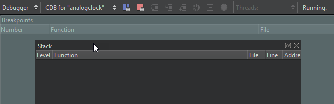

Detach views
You can detach Qt Creator views that have the icon. You can then move them to other places on the screen or to other screens.
To detach views:
- Double-click the title bar of the view.
- Grab the title bar of the view with the mouse and start moving the view to another position on the screen.
- Select .
To show the title bars of views, select View > Views, and deselect the Automatically Hide Title Bars check box.
Attach views
To attach views, drag them to a highlighted dock area.

Revert changes
To open closed views, select View > Views.
To revert the changes, select View > Views > Reset to Default Layout.